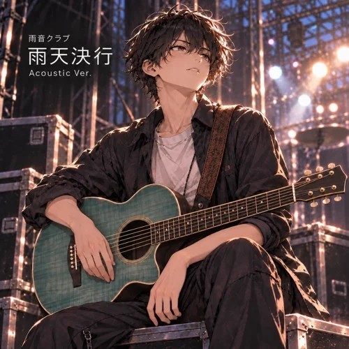

雨音クラブ
雨天決行
from 『神様はバンド名がダサいと言った』
Words & Music by Kotori Yamabuki
予定通りなんて一度もない
正解らしい正解もない
昨日の揉め事 今日も持ち越し
それでもスタジオ 鍵は借りたし
誰が悪いとか もうどうでもいい
言いたいことなら山ほどあるし
四人で書いた予定の続き
三人で勝手に書き足せばいい
戻れない 戻さない
似たようで全然違う
消せない 消さない
だったら持っていけばいい
雨天決行 今日も結構
格好悪いくらいがちょうどいい
散々だった昨日ごと
歪ませて鳴らせば音になる
変更上等 予定は未定
誰かの正解はいらない
ダサい名前も今さらだろ
雨音クラブで行けばいい
知らない声で歌ったくらいで
別のバンドになるわけじゃない
誰かの真似じゃ息が続かない
だったら最初から俺でいい
足りない 足したい やりすぎ うるさい
散々やってやっと気づいた
空いた場所には空いた場所なりの
風くらい通しておけばいい
忘れない 縛られない
似たようで全然違う
変わりたい 変わってない
そんなのどっちでもいい
雨天決行 今日も結構
綺麗じゃなくても構わない
散々だった昨日より
今日の失敗の方がまだいい
変更上等 予定は未定
止まる理由にはならない
笑いたいやつは笑えばいい
こっちはこっちでやっていく
神様だって知らないなら
俺らが知るわけないだろ
だったら聞くな
答えもいらない
菓子でも食って
そこで見てろよ
雨天決行 今日も結構
晴れるまでなんて待ってられない
散々だった昨日ごと
引きずって走れば傷になる
それでも上等 予定は未定
変わったくらいで終われない
ダサい名前も悪くないだろ
今さら妙に似合ってる
雨天決行
次も決行
終わる時だけ決めればいい